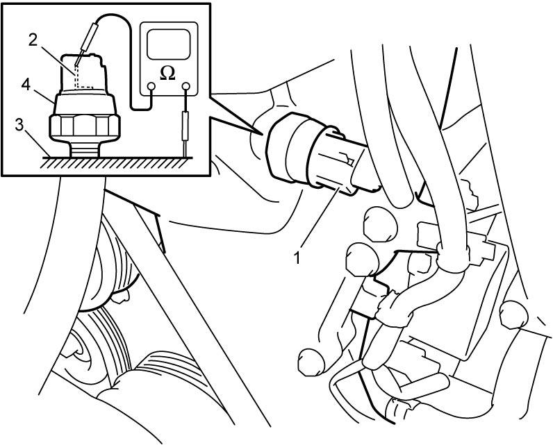

1E
| Oil Pressure Switch On-Vehicle Inspection |
1)Disconnect oil pressure switch connector (1).
2)Check for continuity between oil pressure switch terminal (2) and cylinder head (3) as shown.
If check result is not as specified, replace oil pressure switch (4).

If check result is not as specified, replace oil pressure switch (4).
Oil pressure sensor specification
With engine running: No continuity
At engine stop: Continuity

 "Expand image")